SRAM-Based 4‑bit MAC Accelerator
Digital IC design · SRAM · VLSI
A transistor-level multiply-accumulate unit fed by two custom SRAMs — the core operation of a neural-network accelerator — from the 6T bitcell up. In simulation it closes timing at 0.90 ns on the three specified test vectors and uses 0.39 pJ per multiply-accumulate including the memory reads. A two-person ESE 5700 project with Dhruva Jindal.
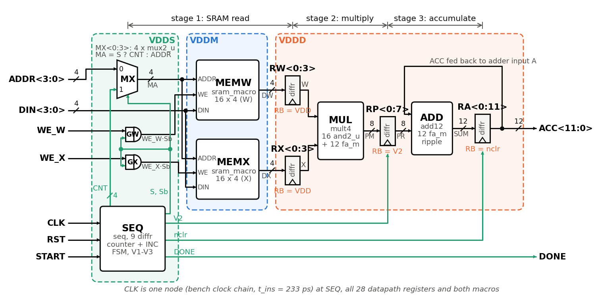
Overview
Most of the arithmetic in a neural network is a dot product, and moving data from memory costs far more energy than the math. This project builds that operation from transistors up. Two 16-word × 4-bit SRAMs hold the weights and activations. Each cycle, a counter reads one word from each memory, a 4 × 4 multiplier forms the 8-bit product, and a 12-bit accumulator adds it in. After 16 cycles the accumulator holds the dot product, and 16 × 15 × 15 = 3600 fits in 12 bits, so it never overflows. Everything below is simulated in Cadence at 0.8 V, with the SRAM arrays Quantus-extracted from layout.
Results
| Quantity | Value | Condition |
|---|---|---|
| Part 1: bitcell | ||
| Bitcell area | 0.527 µm² | 0.578 × 0.912 µm, two fins per device (β = γ = 1) |
| Read SNM | 0.13 V | Post-layout, 0.8 V supply (16% of VDD) (Fig. 3) |
| Write margin | 0.27 V | Post-layout, 0.8 V supply (34% of VDD) (Fig. 4) |
| Lowest working supply | 0.5 V | Post-layout, typical corner only; 81 mV read and 165 mV write margin |
| Part 2: macro | ||
| Macro access / write | 440 ps / 300 ps | 16 × 4 macro, 110 µm² with estimated periphery (Fig. 9) |
| Macro minimum clock / write power | 0.70 ns / 140 µW | 16 × 4 macro (Fig. 9) |
| Part 3: MAC | ||
| Multiplier delay | logical effort | Logical-effort estimate against simulation; simulated 17% slower |
| Accumulator delay | logical effort | Logical-effort estimate against simulation |
| MAC minimum clock | 0.90 ns | Shortest period at which the three specified test vectors pass; a worst-case input needs about 1.07 ns (Fig. 16) |
| MAC energy | 0.39 pJ | Per multiply-accumulate (Test A) with memory reads, clock excluded; 0.51 pJ with the clock, 0.19 pJ without memory (Fig. 14) |
| MAC area | 505 µm² | Estimated from transistor sizes; only the bitcell arrays are laid out |
| Dot product | 17 ns | 16 elements in 19 cycles at the minimum clock (Fig. 13) |
Who did what
- Part 1
- Panagiotis: hand analysis of β and γ, the bitcell layout with DRC and LVS, the functional check.
- Dhruva: the schematic β sweep, parasitic extraction, stability characterization.
- Part 2
- Panagiotis: the array layout, bitline and wordline extraction, the row decoder and wordline timing, macro verification.
- Dhruva: the column circuits, the controller, the metrics and FOM.
- Part 3
- Panagiotis: the flip-flop and its setup, hold and power benches; the datapath (full adder, multiplier, accumulator) and its unit tests; the sequencer logic and its tests; the energy and area analysis.
- Dhruva: the top-level MAC and its full testbench, the minimum-clock sweep, the clock driver and hold analysis, system tests A, B and C.
We wrote the reports together, and both of us reviewed the whole design.
Part 1: the 6T bitcell
We sized the cell from hand analysis, using a threshold voltage and transconductance we extracted from single-fin device simulations, and checked the estimates with a schematic β sweep. DRC does not allow one-fin devices in this kit, so we chose the smallest legal cell: two fins for every pull-up, pass gate and pull-down (β = γ = 1). It is 5.9× smaller than the 2/4/6-fin cell we laid out first. Its two-fin pull-up raises the switching point, so its read margin is better than that cell's, at the cost of a smaller write margin and read current.
- Area: 0.578 × 0.912 µm = 0.527 µm² (5,271 F²), with shared diffusions and no dummy polys.
- Stability (post-layout, 0.8 V): hold SNM 0.29 V, read SNM 0.13 V (16% of VDD), write margin 0.27 V (34%).
- Loads: 0.27 fF of bitline and 0.78 fF of wordline capacitance per cell; 21.8 µA read current.
- Low supply: the cell still reads and writes at 0.5 V, with 81 mV of read and 165 mV of write margin.
- Functional check: on a 16-cell bitline, writes settle in 131 ps and a 100 mV bitline split develops in 24–26 ps, without disturbing the stored value.
SNM and write margin come from exported Spectre sweeps processed in Python with the 45° rotation method, cross-checked against a brute-force search.

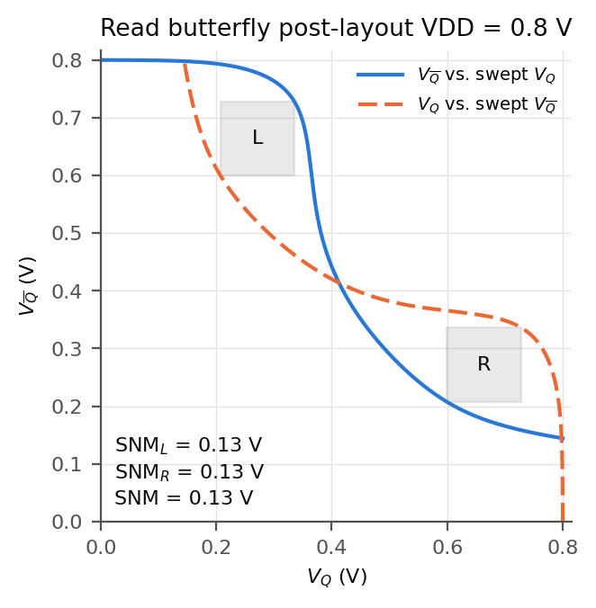
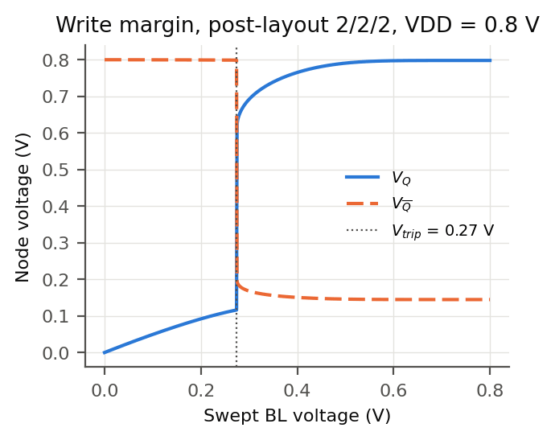
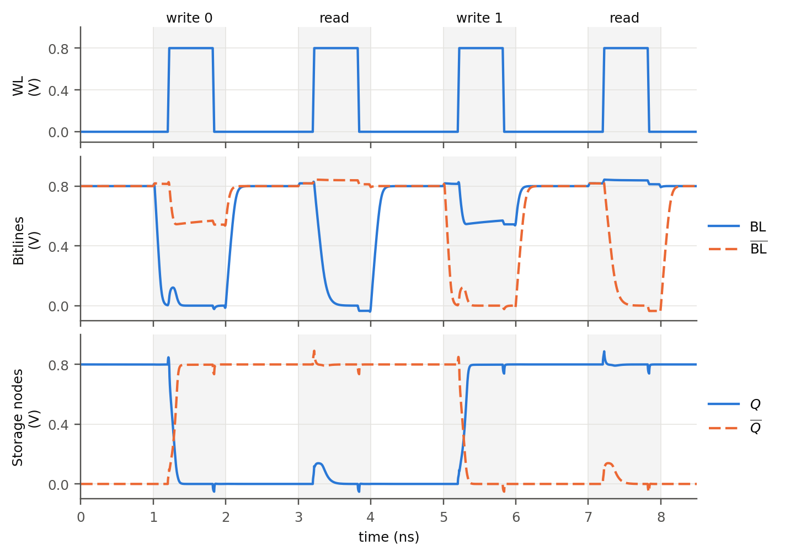
Part 2: the 16 × 4 macro
The cell tiles into a four-column, sixteen-row array. Columns keep one orientation; every odd row is flipped vertically so neighboring rows share a VDD or VSS rail and the bitline contacts merge. The array is 2.312 × 14.592 µm, which is 33.74 µm², exactly 64 copies of the cell with no tiling overhead. Moving the supply straps inside the array boundary saved the 0.202 µm column that a first version wasted on the left.
- Row decoder. A 2-2 predecoded decoder, sized with logical effort against a calibrated τ of 5.9 ps extracted from FO1 and FO4 inverter delays. It drives the wordline 129 ps after the address, against 204 ps for the flat decoder it replaced, and the logical-effort model predicted the winner correctly.
- Wordline pulse. The cell needs 180 ps to read and 135 ps to write inside the full macro. The controller provides 200 ps, so both have margin.
- Column circuits. Precharge, write drivers and the read path, each verified on its own bench before the macro was assembled.
- Macro results. 440 ps access time, 300 ps write time, a 0.70 ns minimum clock period, 140 µW of write power, and 110 µm² including periphery.
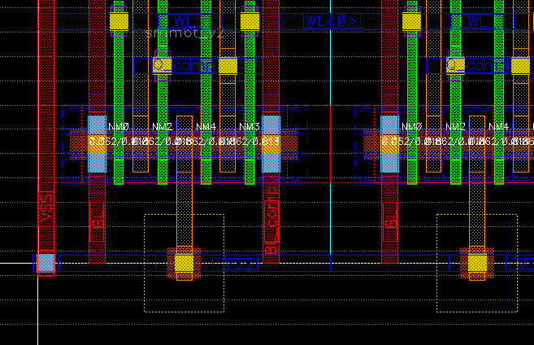
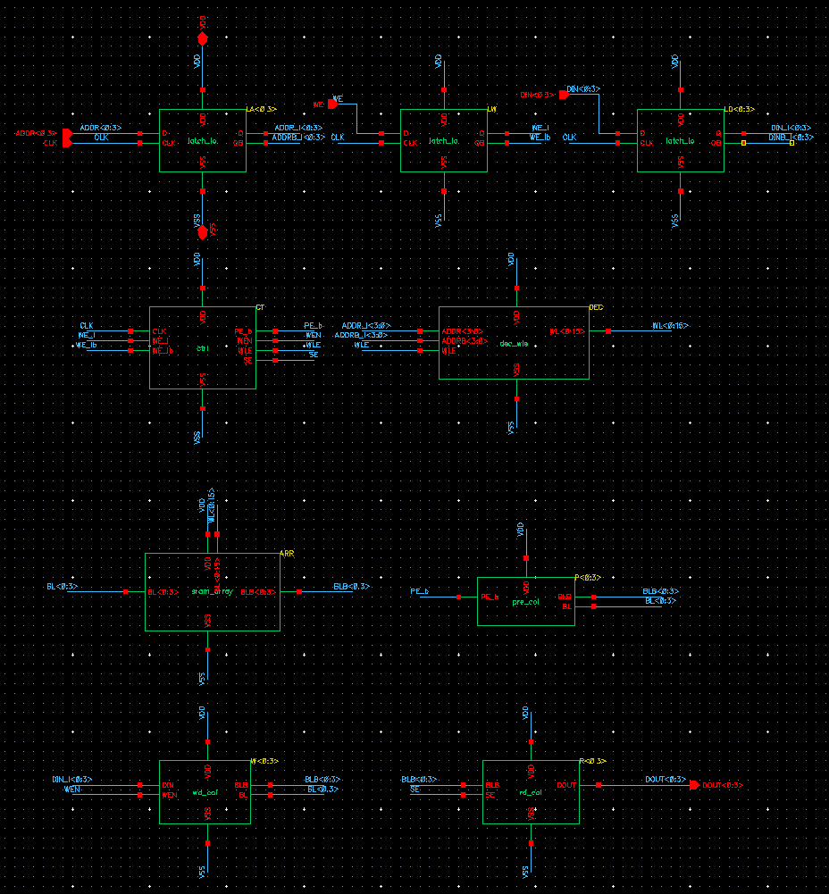
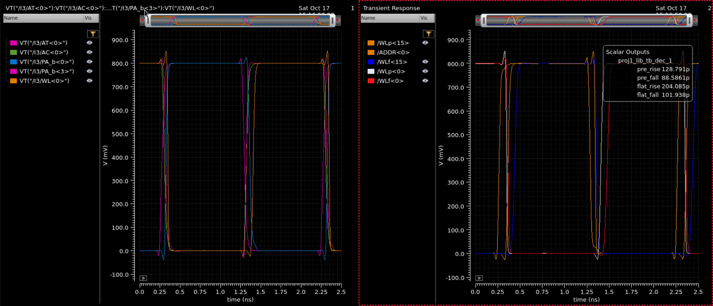
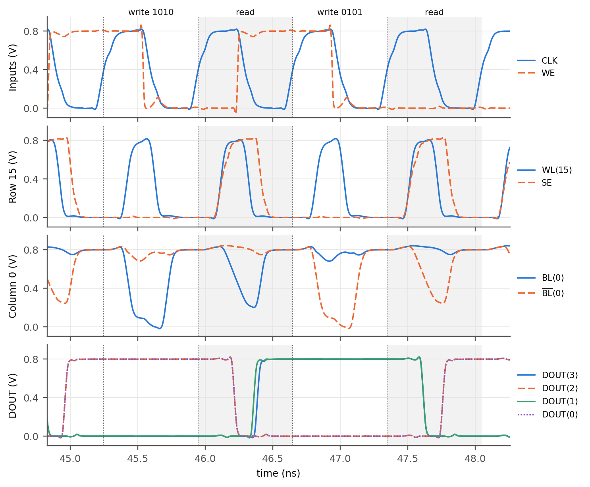
Part 3: the MAC unit
Reading a word, multiplying and accumulating in one cycle would need about 2.3 ns, so the unit is pipelined in three stages: the SRAM read, the multiply, and the accumulate. Two macros hold the weights and the activations, a sequencer walks the address counter through all sixteen words, and a done flag rises when the dot product is complete.
- Register. A transmission-gate leader-follower flip-flop with synchronous active-low reset, built from a NAND2 input stage. 24 transistors and 2.9 µm² per bit, 94 ps clock-to-Q, 87 ps setup, and 1.8 fJ per clock when the data is held. The MAC uses 37 of them.
- Sequencer. Four states: IDLE; COMPUTE for 16 cycles while the counter walks addresses 0 to 15; DRAIN for 3 cycles while the last products move through the pipeline; and DONE, which holds the result until the next start. DRAIN is not a separate flop — it is a three-flop valid chain emptying. Nine flip-flops in total.
- Datapath. A mirrored full adder carries in 67 ps per bit. The 4 × 4 multiplier settles in 890 ps and the 12-bit accumulator ripples in 885 ps, against logical-effort estimates of 760 and 870 ps.
- Timing. Closed at 0.90 ns on the three specified test vectors, with 90 ps of hold margin on the counter-to-address path. The 1.1 ns hand estimate bounds the worst-case input, which the tests never excite.
- Energy. Three separate supply domains let the memory, the datapath and the sequencer be measured apart: 6.2 pJ per dot product, or 0.39 pJ per multiply-accumulate with the memory reads and 0.19 pJ without. The memories take about half of it. The clock chain adds 2.0 pJ, for 8.1 pJ in total, or 0.51 pJ per multiply-accumulate.
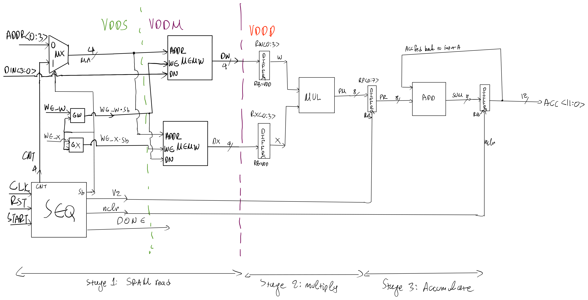
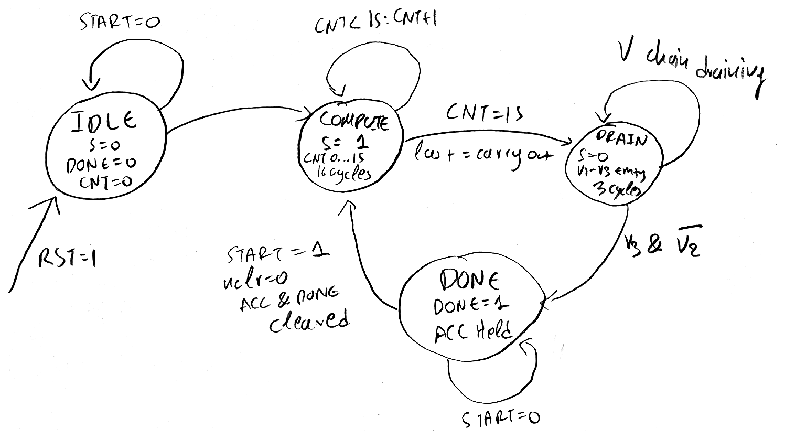
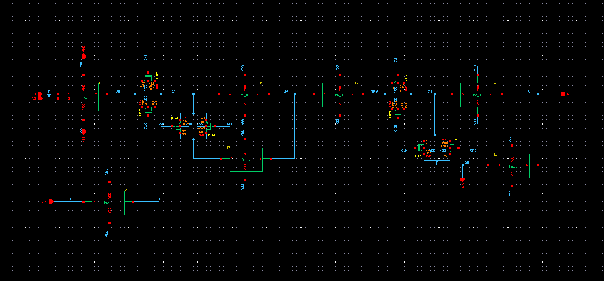
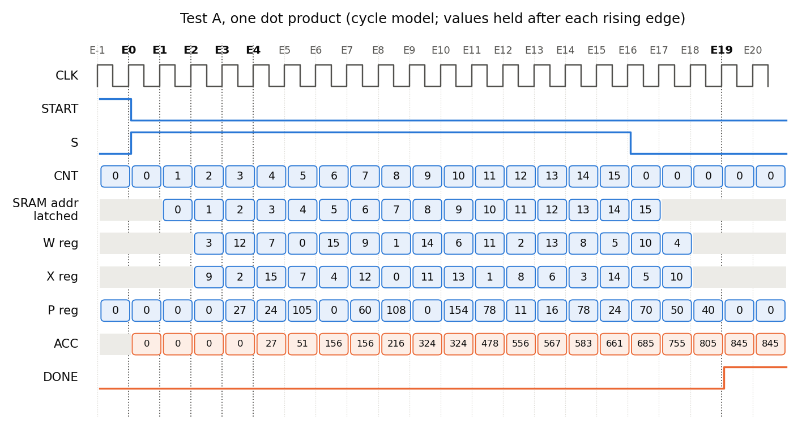
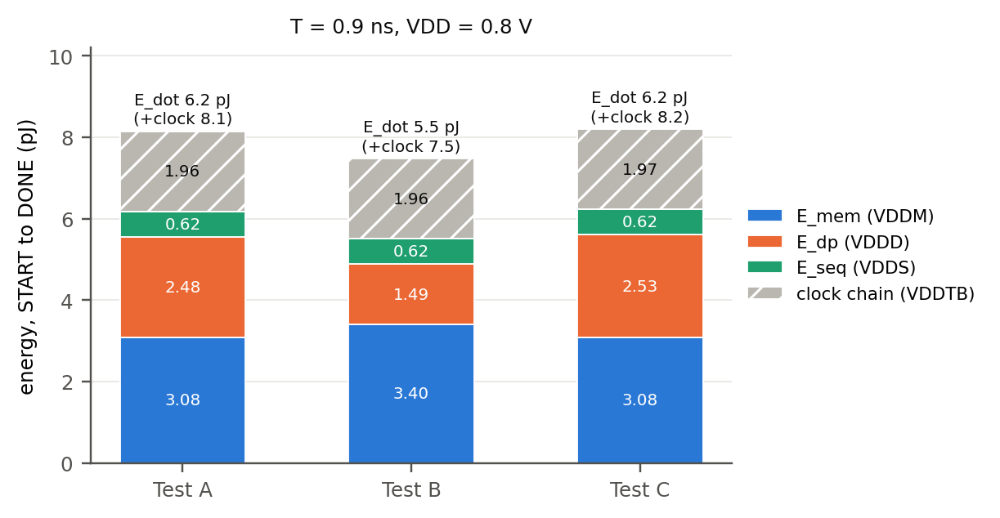
Verification
Every block was unit tested before it went into the next level up, and the full MAC was run against the Quantus-extracted SRAM arrays rather than schematic memories.
- Multiplier, exhaustively. All 256 input pairs produce the correct product. The slowest vector settles in 957 ps.
- System tests. The three vectors from the specification all pass: a mixed case summing to 845, a full-scale case at 3600, and an alternating case at 800 that toggles every memory output and multiplier input on every cycle.
- The edge. All three pass at 0.90 ns. At 0.80 ns the mixed case (Test A) returns 909 instead of 845; B and C were not run there. That is how the minimum clock period was pinned down rather than estimated. Each of the three errors is a single extra power of two (16, 32, 16): one adder or multiplier bit that had not settled by the capturing edge. No misread memory word could produce those values, so the limit is the datapath, as the hand estimate predicted.
- Cycle count. The done flag rises 19.06 to 19.09 cycles after the start pulse in every run, matching the 19-cycle model plus one clock-to-Q.
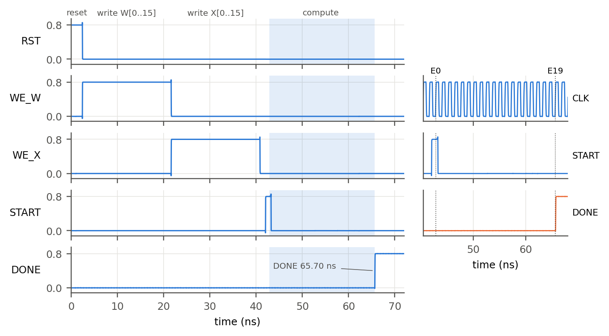
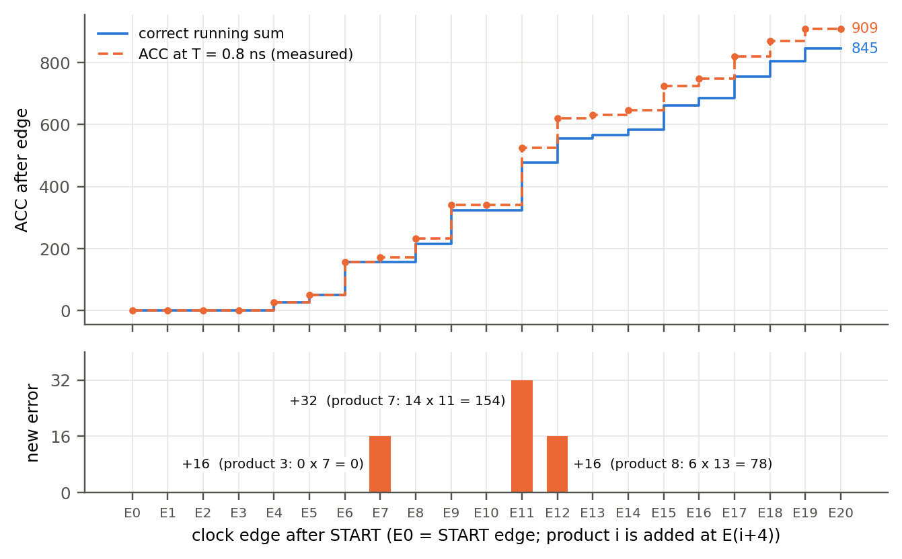
Reports
The Part 3 report is open below; the buttons above it switch the viewer to the Part 2 or Part 1 report. On a phone they open each PDF directly. There is no repository for this one — the design lives in a Cadence library rather than in source control, so the reports are the record.